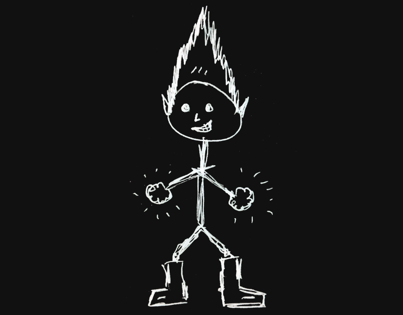

Hi! I am Niladri.
I make websites. Beautiful, elegant, websites. Websites, that'll literally turn you on!
(*not porn though)
I design the websites using my computer, fingers and a brain.
Then I use my development superpowers to make them function properly according to yours and your visitor's needs.